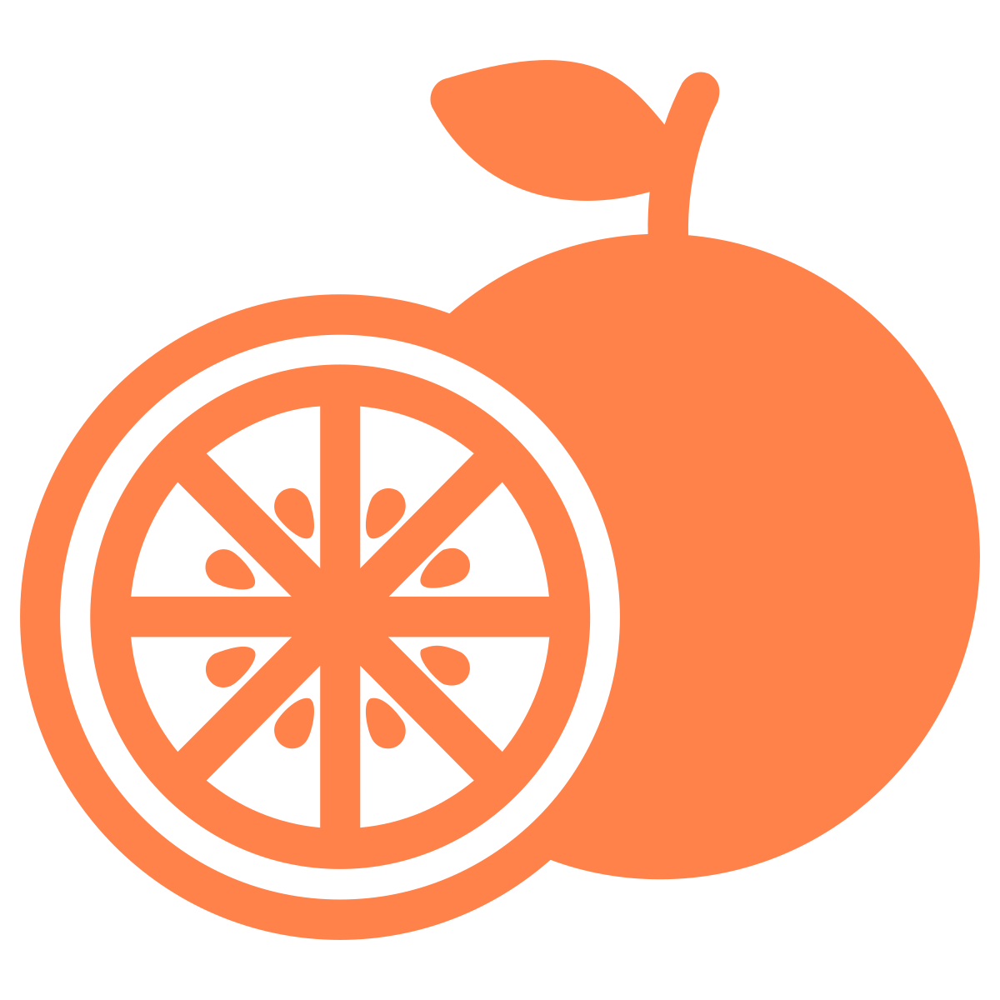
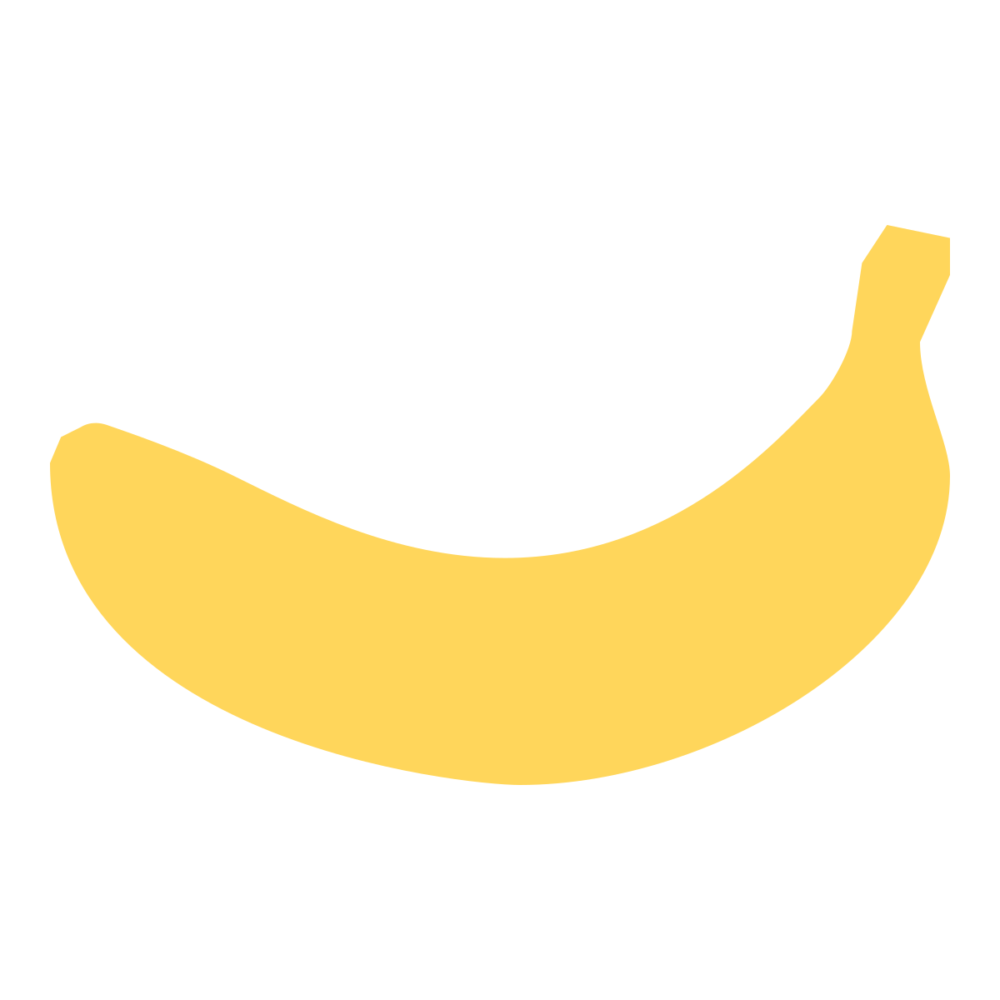
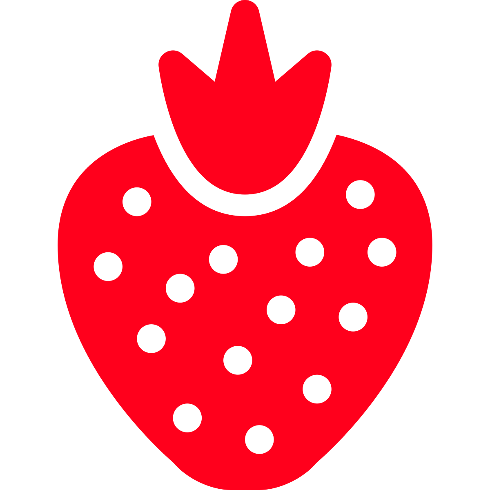
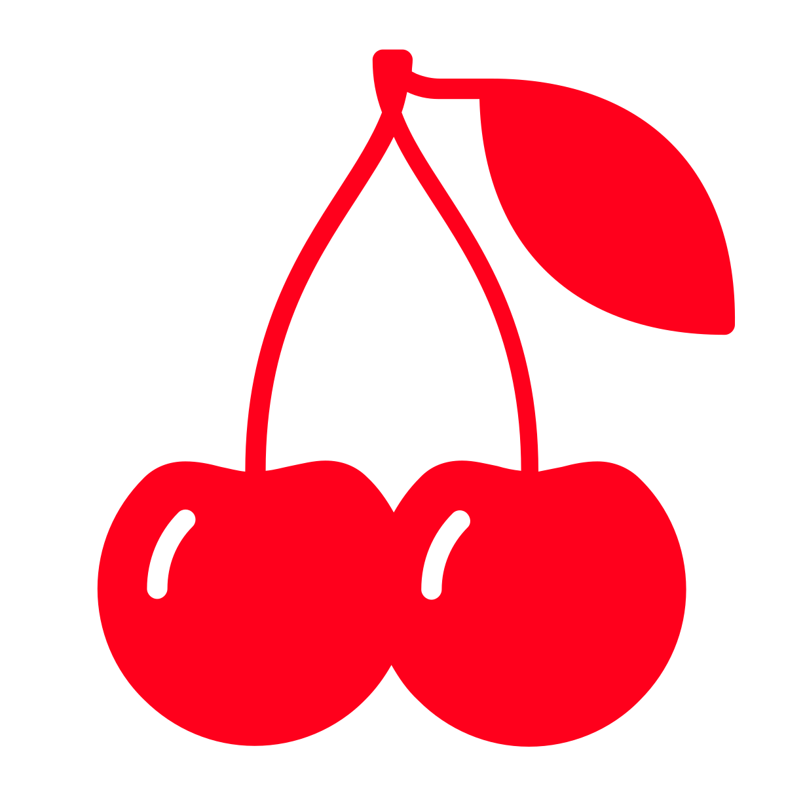
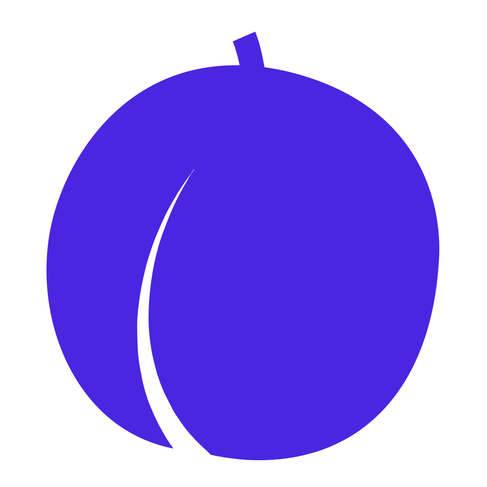
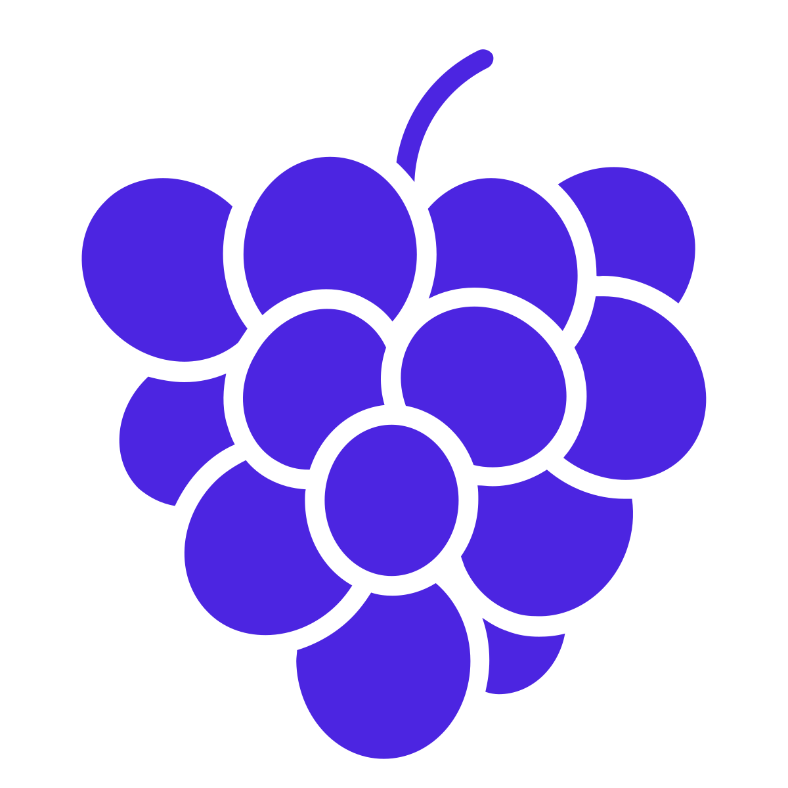
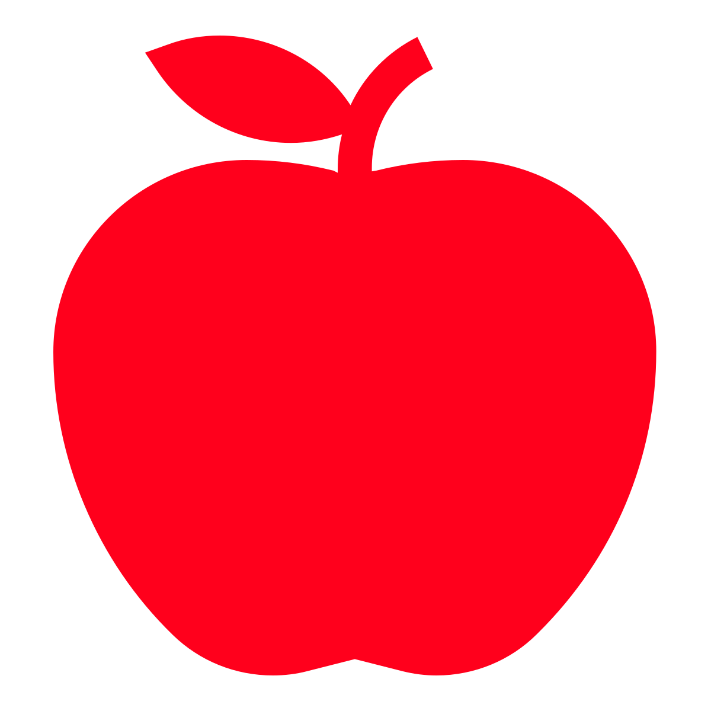

Each group of letters consists of the the letters of a computer part and the letters of a name of a Mac OS X version combined and then alphabetized. Recreate the two parts, order by the Mac OS X version, and then read down the first letters of the computer parts to get ON OPPOSITE, which is OFF.
| Letters | Enumerations | Computer Part | Mac OS X Version | Version Number |
|---|---|---|---|---|
| AADEEGIIKKMNOOPRSSTTY | (9 6; 6) | OPERATING SYSTEM | KODIAK | 10 beta (first) |
| AACCDEEEHHKNORRTTW | (7 4; 7) | NETWORK CARD | CHEETAH | 10.0 |
| ACDEEIMOPPTTUUUV | (6 6; 4) | OUTPUT DEVICE | PUMA | 10.1 |
| AACEGJOOPRRRSSU | (9; 6) | PROCESSOR | JAGUAR | 10.2 |
| AEEHLNOPPPPRRSTUWY | (5 6; 7) | POWER SUPPLY | PANTHER | 10.3 |
| ACDEEGIIILOPRRTTV | (7 5; 5) | OPTICAL DRIVE | TIGER | 10.4 |
| AADEEEKLOPPRRSS | (8; 7) | SPEAKERS | LEOPARD | 10.5 |
| ABDEEEEILNNNOOOPRRRRSSTTWW | (8 7; 4 7) | INTERNET BROWSER | SNOW LEOPARD | 10.6 |
| AACDIKLNOPRT | (8; 4) | TRACKPAD | LION | 10.7 |
| AABCEEEEHIILLMNNNNOORTTTU | (8 5; 8 4) | ETHERNET CABLE | MOUNTAIN LION | 10.8 |
Solve each of the cryptic clues. Each of the answers can be paired with an answer from the other side by forming X and Y phrases. When lines are drawn this way, the letters for LEVEL can be found on the crossings of two lines.
| Cryptic Clue | Answer | Reason | Cryptic Clue | Answer | Reason |
|---|---|---|---|---|---|
| Painting and sculpture for two topless tarts (4) | ARTS | Remove the T from (t)ARTS | Part of jaw that's about 1.66 feet (5) | CHAIN | Part of Jaw = CHIN, 1 = A |
| Loudly cry, ""Lucille!"" (4) | BALL | Homophone of BAWL | Pieces of a totally boss '70s motorcycle cop show (5) | CHIPS | Double Definition |
| California will give a hoot, perhaps (4) | CALL | California = CA, Will = 'LL | Makes 100 simple flotation devices (6) | CRAFTS | 100 = C, Simple flotation devices = RAFTS |
| Vehicle to deteriorate, becoming a vegetable (6) | CARROT | Vehicle = CAR, to deteriorate = ROT | Dirk, Penny, and Mick, but not Juliett (6) | DAGGER | Penny = D, Mick, but not Juliett = (j)AGGER |
| Conceal and reassemble a lock (5) | CLOAK | Anagram A LOCK | Yes, in Russia no unstuffed cabbage is formal (5) | DANCE | Yes in Russia = DA, No = N, Unstuffed C(abbag)E |
| Sort of a failing swimmer? (4) | FISH | Failure = F, Sort of F is F-ISH | Enid flipped over feast (4) | DINE | Reverse ENID |
| Drug-addled greeting will be heard (4) | HIGH | Homophone of HI | Three of the Germans reportedly like some martinis (3) | DRY | Homophone of DREI |
| Make out a thousand and one empty ships (4) | KISS | Thousand = K, One = I, Empty S(hip)S | Employing telepathy, Ronald starts to send feedback (8) | RESPONSE | Ronald = RON, telepathy = ESP, starts to SE(nd) |
| Boy, start to guess a number (4) | SONG | Boy = SON, Start to Guess = G | Pierce Justin's innards? That's disgusting (5) | STICK | (ju)ST(in)'s innards, That's disgusting = ICK |
| Something to drink with beef, by the sound of it (4) | WINE | Homophone of WHINE | Section of intelligence report (4) | TELL | Section of (in)TELL(igence) |
Pictured is a baseball scorecard. The flavor text hints towards the Rookie of the Year, and the right side of the image indicates that you should be looking at the National League Rookie of the Year. Each winner from the years specified has a six-letter last name, and every player at-bats six times. The at-bats can be treated as a cryptogram for the players' names. Get the cryptogram key, and then decode the bottom to spell out HANDSEWN.
| Player | At-Bat 1 | At-Bat 2 | At-Bat 3 | At-Bat 4 | At-Bat 5 | At-Bat 6 |
|---|---|---|---|---|---|---|
| HORNER | Hit by Pitch | Single | K | Home Run | Walk | K |
| WALTON | Intentional Walk | Double | 3-1 | 6-3 | Single | Home Run |
| DEGROM | 1-3 | Walk | 7 | K | Single | Triple |
| SEAGER | 8 | Walk | Double | 7 | Walk | K |
| HOWARD | Hit by Pitch | Single | Intentional Walk | Double | K | 1-3 |
| PUJOLS | F5 | K (looking) | 5-3 | Single | 3-1 | 8 |
| FURCAL | 3U | K (looking) | K | 7-3 | Double | 3-1 |
| ALONSO | Double | 3-1 | Single | Home Run | 8 | Single |
| SEAVER | 8 | Walk | Double | 9 | Walk | K |
| Letter | At-Bat | Letter | At-Bat | |
|---|---|---|---|---|
| A | Double | N | Home Run | |
| C | 7-3 | O | Single | |
| D | 1-3 | P | F5 | |
| E | Walk | R | K | |
| F | 3U | S | 8 | |
| G | 7 | T | 6-3 | |
| H | Hit by Pitch | U | K (looking) | |
| J | 5-3 | V | 9 | |
| L | 3-1 | W | Intentional Walk | |
| M | Triple |
This is a series of edited versions of This Is Just To Say by William Carlos Williams. Each poem clues two words. The top word is the bottom word without the first two letters. Those missing bigrams, in order, spell out DIVINE, FORECAST, OR ANTICIPATE. This is a clue for PREDICT. Take the first two letters off of that, and you get the answer EDICT.
| Top Word | Bottom Word | Bigram |
|---|---|---|
| VERSE | DIVERSE | DI |
| CARS | VICARS | VI |
| URAL | NEURAL | NE |
| REIGN | FOREIGN | FO |
| PEAT | REPEAT | RE |
| NOODLE | CANOODLE | CA |
| RANGE | STRANGE | ST |
| BITS | ORBITS | OR |
| DANTE | ANDANTE | AN |
| REDNESS | TIREDNESS | TI |
| TABLE | CITABLE | CI |
| TINA | PATINA | PA |
| STING | TESTING | TE |
| Left Station | Right Station | Letter |
|---|---|---|
| NORTH STATION | OAK GROVE (1) | N |
| MASSACHUSETTS AVENUE | STONY BROOK (18) | U |
| ASSEMBLY | SULLIVAN SQUARE (5) | M |
| STONY BROOK | COMMUNITY COLLEGE (6) | B |
| COMMUNITY COLLEGE | ROXBURY CROSSING (16) | E |
| JACKSON SQUARE | TUFTS MEDICAL CENTER (12) | R |
| STATE | ASSEMBLY (4) | T |
| FOREST HILLS | NORTH STATION (7) | H |
| TUFTS MEDICAL CENTER | JACKSON SQUARE (17) | E |
| DOWNTOWN CROSSING | CHINATOWN (11) | O |
| GREEN ST. | MALDEN CENTER (2) | R |
| HAYMARKET | WELLINGTON (3) | Y |
The meta seems straightforward enough, but two problems quickly present themselves. The first is that you need the "canonical source" for the trip, and the second is that it is very hard to place the answers without knowing what ordering they are going in - especially since two of the answers are the same length. You can stare at the answers for a long time, but doing so won't help you. You'll need to get these bits of information from somewhere else.
First, the "canonical ordering". Googling the five book titles for the subpuzzles shows that they are all written by Eric Carle. Eric Carle's most famous book also happens to involve a voracious bookwyrm - The Very Hungry Catepillar. Finding a copy of the book, you can find that the canonical ordering of the trip is one apple, two pears, three plums, four strawberries, and five oranges.
Now, if we can associate the answers with a fruit, we can put them in order. While we can't associate the answers directly with fruit, we can associate the puzzles themselves with fruit, thereby associating the answers.
With this information, we can now place the words in the grid. Each word needs to be placed in the grid in the above order such that it covers up the correct amount of the appropriate fruit. Read the letters from each answer that are on the correct fruit, and you get the thing we need to do to quell the Voracious Bookwyrm - FEED IT A NEW BERRY
| END | Y | R | O | E | H | T | R | E | B | M | U | N | |
|  |  |  |  | N | |||||||||
|  |  |  | W | ||||||||||
| E | |||||||||||||
| S | |||||||||||||
| D | |||||||||||||
| N | |||||||||||||
| A | |||||||||||||
| H | |||||||||||||
| E | D | I | C | T | |||||||||
| L | |||||||||||||
| E | |||||||||||||
| V | |||||||||||||
| E | |||||||||||||
| L | |||||||||||||
| F | |||||||||||||
| F | |||||||||||||
| O | |||||||||||||
| START |